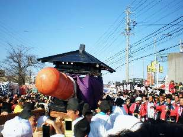

Борис Акунин
Мой календарь
Отметим-ка еще один японский праздник, для взрослых - Хонэн-мацури, Праздник Богатого Года. Очень древний, зародившийся во времена, когда считалось, что крестьянский труд оплодотворяет землю и, если плохо оплодотворил, быть голоду и беде.
Старинный обряд сохранился в городке Комаки. 15 марта туда съезжаются толпы туристов - есть на что посмотреть. А еще специально приезжают семейные пары, которые мечтают о ребенке.
Из храма выходит многолюдная процессия, которая торжественно несет символ плодородия.
Я специально выбрал снимок, на котором не очень понятно, что именно несут празднующие, но это то самое: огромный красный фаллос, вырезанный из цельного кипариса. Каждый год этот артефакт нужно изготавливать заново, потому что жизненная сила должна быть свежей.
Волокут 200-килограммовый символ мужчины 42-летнего возраста, раскачивая его взад-вперед. Далее следует процессия 36-летних женщин, каждая несет тот же предмет, но поменьше размером. Публику бесплатно поят сакэ, все кричат и радуются. Если не пить сакэ, не кричать и не радоваться, год будет неурожайным: ни риса, ни новых детей.
Как отмечать этот праздник - решайте сами. Но кричать, радоваться и выпивать сакэ обязательно.